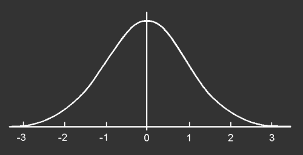
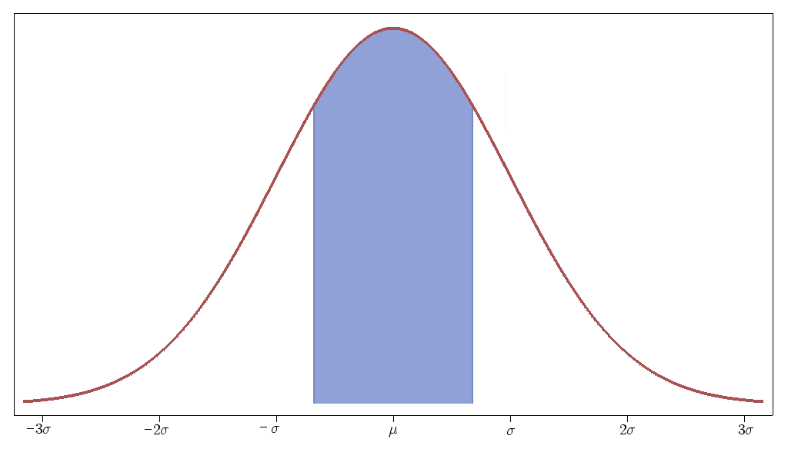

Expressive Parallel Analytics with Clojure
@henrygarner
Mission-critical analysis


Metastatistics
https://www.timeshighereducation.com/news/ranking-methodology-2016
- 13 performance indicators
- 10 quotient indicators
- 4 weighted quotients across 6 subjects
- 1,000+ institutions
- 7 ranking tables
"Annoying-sized data"

Analytic sequence
- Load & join
- Apply rules
- Apply filters
- Normalise data
- Harmonise units
- Summary statistics
- Harmonise ranges
- Calculate score
- Output
- x 13 x 7
(load-data "data.edn") ;;({:name "A", :fx 0.8, :a 90, :b 50} ;; {:name "B", :fx 0.2, :a 80, :b 80} ;; {:name "C", :fx 0.1, :a 60, :b 40} ;; {:name "D", :fx 0.5, :a 50, :b 70})
(->> (load-data "data.edn") (filter relevant?) (map convert-currency) (map assign-score)) ;;({:name "A", :fx 0.8, :a 112.5, :b 62.5, :score 175.0} ;; {:name "B", :fx 0.2, :a 400.0, :b 400.0, :score 800.0} ;; {:name "D", :fx 0.5, :a 100.0, :b 140.0, :score 240.0})
(filter relevant?)
CC BY 2.0 https://www.flickr.com/photos/cmatsuoka/3824494272/
(def xform (comp (filter relevant?) (map convert-currency) (map assign-score)))
CC BY 2.0 https://www.flickr.com/photos/cmatsuoka/4462883383/
(sequence xform (load-data "data.edn")) ;;({:name "A", :fx 0.8, :a 112.5, :b 62.5, :score 175.0} ;; {:name "B", :fx 0.2, :a 400.0, :b 400.0, :score 800.0} ;; {:name "D", :fx 0.5, :a 100.0, :b 140.0, :score 240.0})
(->> (load-data "data.edn") (sequence (comp xform (take 2)))) ;;({:name "A", :fx 0.8, :a 112.5, :b 62.5, :score 175.0} ;; {:name "B", :fx 0.2, :a 400.0, :b 400.0, :score 800.0}) (->> (load-data "data.edn") (sequence (comp xform (map :score)))) ;; (175.0 800.0 240.0)
(def scores (comp xform (map :score))) (->> (load-data "data.edn") (transduce scores +)) ;; 1215.0
(defn mean [xs] (let [sum (reduce + xs) count (count xs)] (when-not (zero? count) (/ sum count)))
(defn mean [accum x] (-> (update-in accum [:sum] + x) (update-in [:count] inc)))
(reduce mean (range 10)) ;; => ...?
1. Unhandled java.lang.NullPointerException
(No message)
Numbers.java: 1013 clojure.lang.Numbers/ops
Numbers.java: 112 clojure.lang.Numbers/inc
core.clj: 892 clojure.core/inc
AFn.java: 154 clojure.lang.AFn/applyToHelper
AFn.java: 144 clojure.lang.AFn/applyTo
core.clj: 632 clojure.core/apply
core.clj: 5923 clojure.core/update-in
RestFn.java: 445 clojure.lang.RestFn/invoke
sweet.clj: 242 example.sweet/mean-reducer
LongRange.java: 222 clojure.lang.LongRange/reduce
core.clj: 6514 clojure.core/reduce
REPL: 1 example.sweet/eval28337
(reduce mean {:sum 0 :count 0} (range 10)) ;; => {:sum 45, :count 10}
(defn mean ;; Init ([] {:sum 0 :count 0}) ;; Step ([accum x] (-> (update-in accum [:count] inc) (update-in [:sum] + x))))
(reduce mean (mean) (range 10)) ;; => {:sum 45, :count 10}
(defn mean ;; Init ([] {:sum 0 :count 0}) ;; Step ([accum x] (-> (update-in accum [:count] inc) (update-in [:sum] + x))) ;; Complete ([{:keys [sum count]}] (when-not (zero? count) (/ sum count))))
(mean (reduce mean (mean) (range 10))) ;; => 9/2
(transduce (map identity) mean (range 10)) ;; => 9/2
What is the identity transducer?
(defn identity-transducer [rf] (fn ([] (rf)) ;; Init ([acc] (rf acc)) ;; Complete ([acc x] (rf acc x)))) ;; Step
(defn identity-transducer [rf] rf)
(def identity-transducer identity)
(transduce identity mean (range 10)) ;; => 9/2
https://en.wikipedia.org/wiki/Algorithms_for_calculating_variance
(defn variance ;; Init ([] [0 0 0]) ;; Step ([[count mean sum-of-squares] x] (let [count' (inc count) mean' (+ mean (/ (- x mean) count'))] [count' mean' (+ sum-of-squares (* (- x mean') (- x mean)))])) ;; Complete ([[count mean sum-of-squares]] (/ sum-of-squares (max 1 (dec count)))))
(->> (load-data "data.edn") (transduce scores variance)) ;; => 118075.0

(def standard-deviation (completing variance #(Math/sqrt (variance %))))
(->> (load-data "data.edn") (transduce scores standard-deviation)) ;; => 343.6204301260331
(->> (load-data "data.edn") (map (juxt :a :b))) ;; ([90 50] [80 80] [60 40] [50 70])
(->> (load-data "data.edn") (transduce scores (juxt mean standard-deviation))) ;; => ?
1. Unhandled java.lang.NullPointerException
(No message)
Numbers.java: 1013 clojure.lang.Numbers/ops
Numbers.java: 112 clojure.lang.Numbers/inc
core.clj: 892 clojure.core/inc
AFn.java: 154 clojure.lang.AFn/applyToHelper
AFn.java: 144 clojure.lang.AFn/applyTo
core.clj: 632 clojure.core/apply
core.clj: 5923 clojure.core/update-in
RestFn.java: 445 clojure.lang.RestFn/invoke
sweet.clj: 82 example.sweet/mean
core.clj: 2464 clojure.core/juxt/fn
core.clj: 2611 clojure.core/map/fn/fn
core.clj: 2611 clojure.core/map/fn/fn
core.clj: 2611 clojure.core/map/fn/fn
core.clj: 2675 clojure.core/filter/fn/fn
protocols.clj: 167 clojure.core.protocols/fn
protocols.clj: 19 clojure.core.protocols/fn/G
protocols.clj: 31 clojure.core.protocols/seq-reduce
protocols.clj: 101 clojure.core.protocols/fn
protocols.clj: 13 clojure.core.protocols/fn/G
core.clj: 6590 clojure.core/transduce
core.clj: 6585 clojure.core/transduce
REPL: 2 example.sweet/eval47021
(defn juxt-r [& rfns] (fn ([] (mapv (fn [f] (f)) rfns)) ([acc] (mapv (fn [f a] (f a)) rfns acc)) ([acc x] (mapv (fn [f a] (f a x)) rfns acc)))) (def rf (juxt-r + conj))
(transduce identity rf (range 10)) ;; => [45 [0 1 2 3 4 5 6 7 8 9]]
(def rf (juxt-r + ((take 3) conj))) (transduce identity rf (range 10)) ;; => ...? ;;
(def rf (juxt-r + ((take 3) conj))) (transduce identity rf (range 10)) ;; => [45 #object[clojure.lang.Reduced {:status :ready, ;; :val [0 1 2]}]]
(defn take [n] (fn [rf] (let [nv (volatile! n)] (fn ([] (rf)) ([result] (rf result)) ([result input] (let [n @nv nn (vswap! nv dec) result (if (pos? n) (rf result input) result)] (if (not (pos? nn)) (ensure-reduced result) result)))))))
(defn juxt-r [& rfns] (fn ([] (mapv (fn [f] (f)) rfns)) ([acc] (mapv (fn [f a] (f (unreduced a))) rfns acc)) ([acc x] (let [all-reduced? (volatile! true) results (mapv (fn [f a] (if-not (reduced? a) (do (vreset! all-reduced? false) (f a x)) a)) rfns acc)] (if @all-reduced? (reduced results) results)))))
(def rf (juxt-r + ((take 3) conj))) (transduce identity rf (range 10)) ;; => [45 [0 1 2]]
…but…
(transduce identity rf (range 10)) ;; => [45 []]
(def rf ((map inc) +)) (transduce identity rf (range 10)) ;; => 55
(defn facet [rf fns] (->> (map (fn [f] ((map f) rf)) fns) (apply juxt-r))) (def rf (facet + [:a :b]))
(->> (load-data "data.edn") (transduce identity rf)) ;; => [280 240]
(defn weighted-mean [nf df] (let [rf (facet mean [nf df])] (completing rf (fn [x] (let [[n d] (rf x)] (when-not (zero? d) (/ n d)))))))
(->> (load-data "data.edn") (transduce identity (weighted-mean :a :b))) ;; => 7/6
(defn fuse [kvs] (let [rfns (vals kvs) rf (apply juxt-r rfns)] (completing rf #(zipmap (keys kvs) (rf %))))) (def rf (fuse {:mean mean :sd standard-deviation}))
(->> (load-data "data.edn") (transduce (map :a) rf)) ;; => {:mean 70, :sd 18.257418583505537}
(def rf (fuse {:mean-score ((map :score) mean) :fields (facet (fuse {:mean mean :sd standard-deviation}) [:a :b])}))
(->> (load-data "data.edn") (transduce xform rf)) ;; {:mean-score 405.0, ;; :fields [{:mean 204.16666666666666, ;; :sd 169.71176545346918} ;; {:mean 200.83333333333334, ;; :sd 176.78258775494078}]}
Success!
Hey, where's my parallelism?
Reducers
solve(problem):
if problem is small enough:
solve problem directly (sequential algorithm)
else:
for part in subdivide(problem)
fork subtask to solve part
join all subtasks spawned in previous loop
combine results from subtasks


The Interquartile Range

(import '[org.HdrHistogram DoubleHistogram]) (defn iqr-reducer ([] (DoubleHistogram. 1e8 3)) ([hist x] (doto hist (.recordValue x))) ([hist] hist)) (defn iqr-combiner ([] (DoubleHistogram. 1e8 3)) ([a b] (doto a (.add b))) ([hist] (vector (.getValueAtPercentile hist 25) (.getValueAtPercentile hist 75))))
Fold
(require '[clojure.core.reducers :as r]) (->> (load-data "data.edn") (eduction xform (map :score)) (r/fold iqr-combiner iqr-reducer)) ;; => #object[org.HdrHistogram.DoubleHistogram]
(require '[clojure.core.reducers :as r]) (->> (load-data "data.edn") (eduction xform (map :score)) (r/fold iqr-combiner iqr-reducer) (iqr-combiner)) ;; => [175.0 240.0]
core.async
"The conveyor belt of awesomeness" – Kris Jenkins
- reduce
- map<
- pipeline
- reduce
map<- pipeline
(require '[clojure.core.async :as async]) (defn fold [n xform reducef combinef in] (let [reduced (async/chan n) f (xform reducef)] (->> (for [_ (range n)] (async/reduce f (f) in)) (async/merge) (async/pipeline n reduced (map f))) (async/go (->> (async/reduce combinef (combinef) reduced) (async/<!) (combinef)))))
(def data (take 100000 (cycle (load-data "data.edn")))) (quick-bench (->> (async/to-chan data) (fold 8 (comp xform (map :score)) histogram-reducer histogram-combiner) (async/<!!))) ;; Execution time mean : 162.811354 ms ;; Execution time std-deviation : 168.664279 ms
(quick-bench (->> (eduction xform (map :score) data) (r/fold 8 histogram-combiner histogram-reducer))) ;; Execution time mean : 50.593113 ms ;; Execution time std-deviation : 2.644261 ms
Summary
- Step functions
- init, step, complete
- reduced?
- composition:
- juxt-r, facet, fuse
- Transducible contexts:
- sequence, transduce, eduction
- fold
References
- https://github.com/cgrand/xforms
- reduce, into, by-key, partition, pad, for and window
- str, str!, avg, count, juxt, juxt-map and first
- https://github.com/aphyr/tesser
- correlation, variance, covariance, standard-deviation
- https://tbaldridge.pivotshare.com/
- Logic Programming, Core.Async, Transients, and more
If you liked this…
http://cljds.com/cljds-book | http://cljds.com/cljds-amzn

Thanks!
https://github.com/henrygarner/cljx-december-2015

Henry Garner
@henrygarner